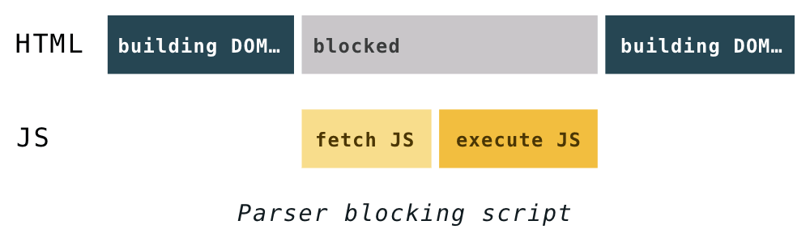
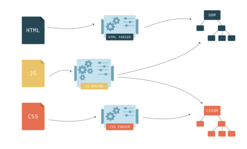
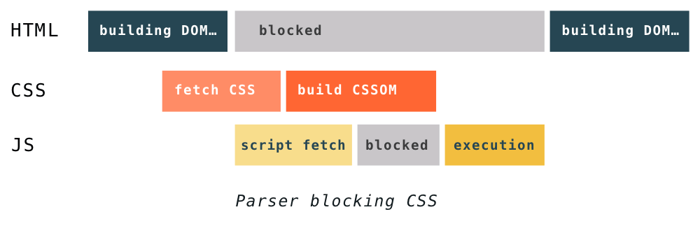
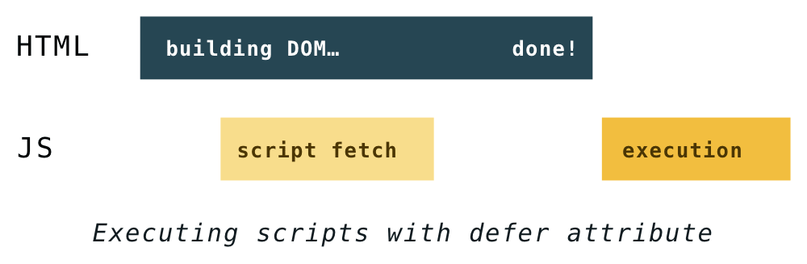
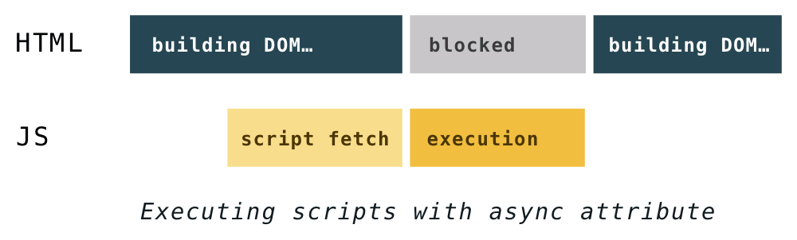

1. Процес побудови веб-сторінки
Коли браузер створює DOM, якщо він зустрічає тег script в HTML, він повинен
виконати його відразу. Якщо скрипт є зовнішнім, він повинен спочатку завантажити
скрипт.
За замовчуванням, щоб виконати скрипт, побудова DOM призупиняється, і відновлюється тільки після того, як JavaScript-движок виконав скрипт.

Чому побудова DOM призупиняється? Скрипти можуть змінювати як HTML, так і його продукт - DOM, додаючи вузли. Скрипти можуть також запитувати щось про DOM, і якщо це відбувається, коли DOM все ще будується, він може повернути несподівані результати.
JavaScript блокує побудову DOM, оскільки він може модифікувати документ. CSS не може змінити документ, тому здається, що немає причин для його блокування, правильно?
Однак, що якщо скрипт запитує інформацію (про стиль), яка ще не була проаналізована? Браузер не знає, що збирається виконати скрипт - він може запросити щось на зразок фонового кольору DOM-вузла, який залежить від таблиці стилів.

Через це CSS може блокувати розбір HTML в залежності від порядку зовнішніх таблиць стилів і сценаріїв в документі. Якщо перед скриптами в документі є зовнішні таблиці стилів, конструкція об'єктів DOM і CSSOM може заважати один одному.
Коли синтаксичний аналізатор потрапляє в тег сценарію, конструкція DOM НЕ може тривати до тих пір, поки JavaScript не завершить виконання, і JavaScript не буде виконано до тих пір, поки CSS не буде завантажений, проаналізовано і не буде доступний CSSOM.

Ще одна річ, про яку слід пам'ятати, полягає в тому, що навіть якщо CSS не блокує конструкцію DOM, він блокує рендеринг. Браузер нічого не відобразить, поки не буде DOM і CSSOM. Це пов'язано з тим, що сторінки без CSS часто непридатні для використання. Якщо браузер показав безладну сторінку без CSS, а через кілька миттєвостей стилізовану, це називається Flash of Unstyled Content .
Раптові зміщення вмісту і візуальні зміни погано впливають на UX (user experience) . Щоб обійти ці проблеми, ви повинні прагнути якомога швидше доставити CSS. Пам'ятайте правило «стилі нагорі, сценарії внизу»? Тепер ви знаєте навіщо робити саме так.
2. Атрибути defer і async
Синхронні скрипти блокують парсер, це проблема. І не всі скрипти однаково важливі для користувачів, наприклад, для відстеження та аналітики. Рішення? Асинхронне завантаження цих менш важливих скриптів.
Атрибути defer і async були введені, щоб дати розробникам можливість
розповісти браузеру, які скрипти обробляти асинхронно.
Обидва атрибути повідомляють браузеру, що він може продовжити розбір HTML при завантаженні сценарію в фоновому режимі, а потім виконати скрипт після його завантаження. Таким чином, завантаження скриптів не блокує конструкцію DOM і рендеринг сторінок. Результат: користувач може бачити сторінку до того, як всі сценарії завершили завантаження.
Різниця між ними - це той момент, коли завантажені скрипти починають виконуватися.
Виконання defer скриптів починається після завершення парсинга, але перед
подією DOMContentLoaded. Це гарантує, що скрипти будуть виконуватися в тому
порядку, в якому вони відображаються в HTML, і не будуть блокувати синтаксичний
аналізатор.
<script src="path-to-script.js" defer>script>

async виконується при першій нагоді після завершення і перед подією
завантаження вікна. Це означає, що можливо скрипти не виконуються в тому
порядку, в якому вони відображаються в HTML. Це також означає, що вони можуть
перервати створення DOM.
<script src="path-to-script.js" async>script>

Де б вони не були вказані, асинхронні скрипти завантажуються з низьким
пріоритетом. Вони часто завантажуються після всіх інших скриптів, які не
блокуючи створення DOM. Однак, якщо async скрипт завершує завантаження раніше,
його виконання може блокувати створення DOM і все синхронні скрипти, які згодом
завершують завантаження.